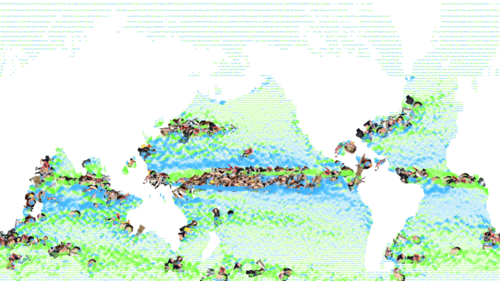
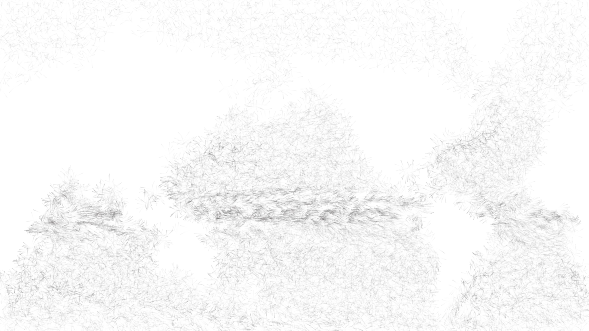
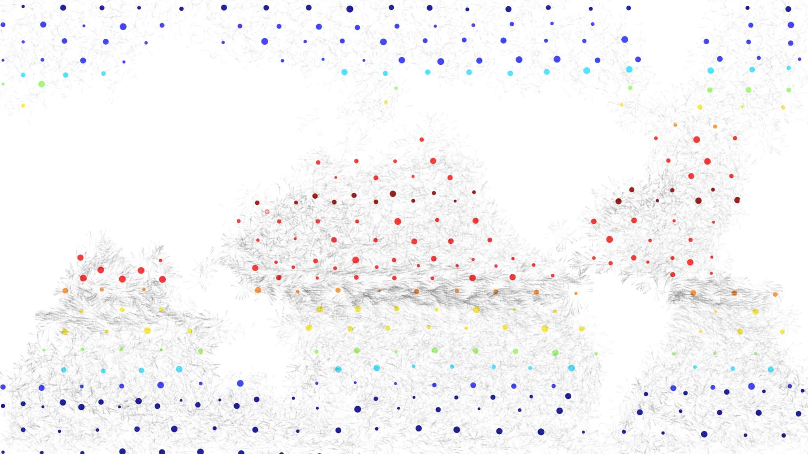
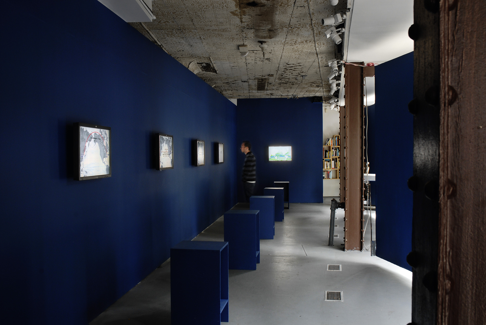

Linked By Air




A Perfect Home
Medium: Installation
Client: Do Ho Suh
Year: 2011
Korean artist Do Ho Suh’s science fiction project, The Perfect Home, proposes a home situated on a floating trans-Pacific bridge, halfway between New York and Seoul. We designed a 12-minute video loop that shows 16 years of global ocean current movement, drawn from NOAA’s OSCAR satellite remote sensing project; as well as Do Ho’s own flight patterns over the years. About 64 million data points are represented. The screen alternates among four different ways of displaying the data, including waving lines, breathing eggs, spinning discs, and 95 kinds of pop currency.
.Z
Installation view at Storefront (our screen is at the end). The project has subsequently been installed in other galleries, with us adding layers to the animation each time. Photo: Storefront for Art and Architecture / Stefan Hagen.